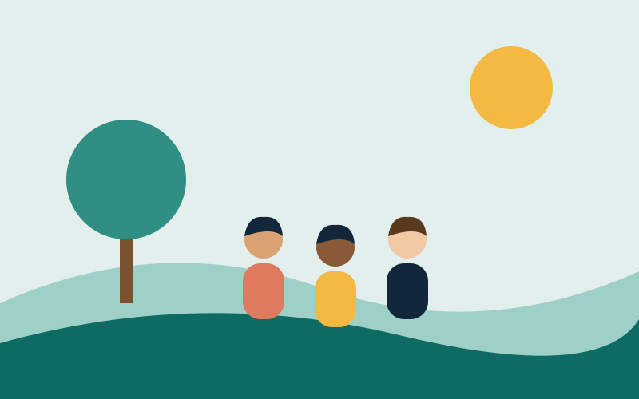

Find mental health help you can trust.
Counseling, crisis lines, and calming tools for Filipino students, teachers, and families. When learners feel supported, they can keep learning.
Start here
Why a mental health site for SDG 4?
Quality education needs learners who feel safe, supported, and able to focus. KalingaPH connects Filipino learners to help and to simple skills that support learning.

Try one minute of calm
Box breathing: slow down in one minute
A one-minute breathing guide with a growing and shrinking circle.
Text version (transcript)
- Sit comfortably. Feet on the floor. Shoulders loose.
- Breathe in through your nose for a count of 4.
- Hold gently for 4.
- Breathe out through your mouth for 4.
- Rest for 4. Repeat three times.
- Notice how you feel. If you feel dizzy, breathe normally.
Silent video with on-screen text and captions. Original work, see attribution.
Box breathing helps your body slow down. More guides are in the video library.
Not sure what you are feeling? Read signs to look for or the myths and facts.